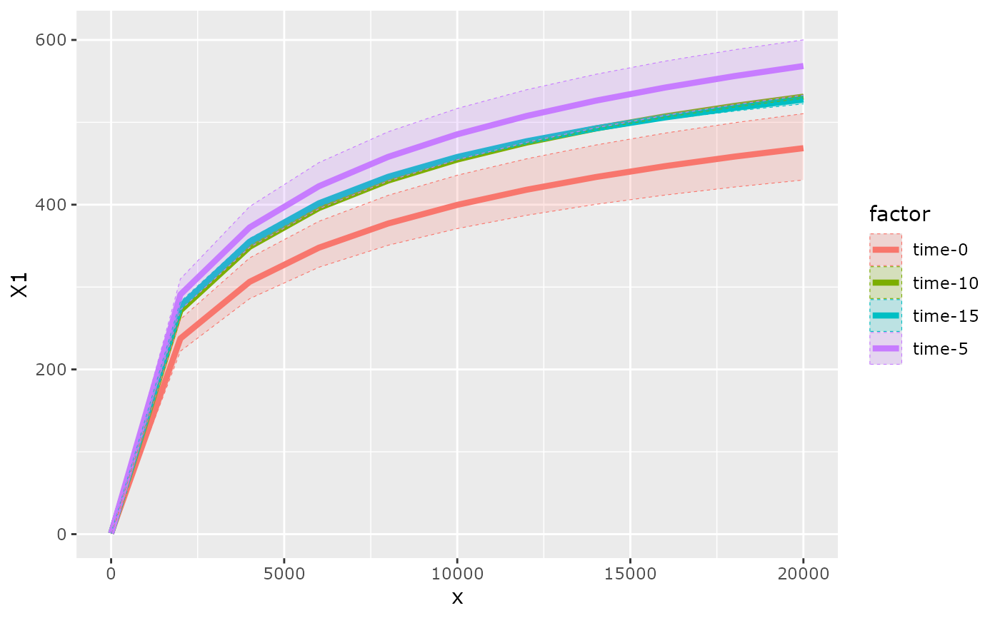
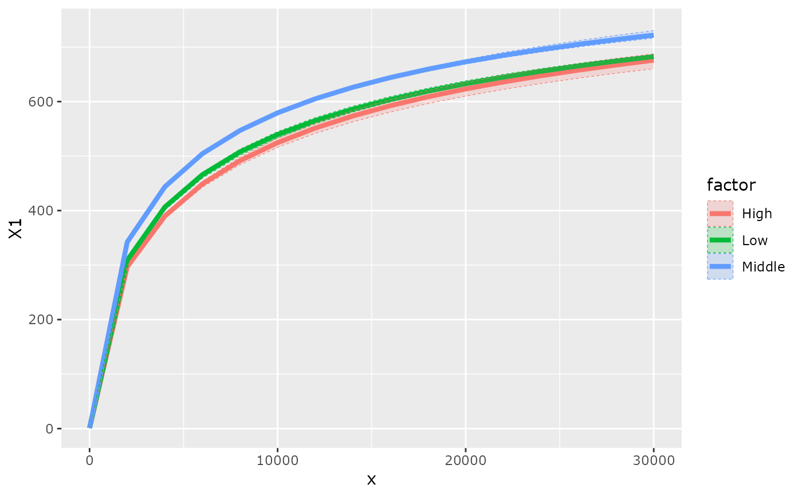

Plot accumulation curves with balanced modality and depth rarefaction
Source:R/plot_functions.R
accu_plot_balanced_modality.Rd
This function (i) rarefy (equalize) the number of samples per modality of a factor and (ii) rarefy the number of sequences per sample (depth). The seed is set to 1:nperm. Thus, with exacly the same parameter, including nperm values, results must be identical.
Usage
accu_plot_balanced_modality(
physeq,
fact,
nperm = 99,
step = 2000,
by.fact = TRUE,
progress_bar = TRUE,
quantile_prob = 0.975,
rarefy_by_sample_before_merging = TRUE,
sample.size = 1000,
verbose = FALSE,
...
)Arguments
- physeq
(required): a
phyloseq-classobject obtained using thephyloseqpackage.- fact
(required) The variable to rarefy. Must be present in the
sam_dataslot of the physeq object.- nperm
(int) The number of permutations to perform.
- step
(int) distance among points calculated to plot lines. A low value give better plot but is more time consuming.
- by.fact
(logical, default TRUE) First merge the OTU table by factor to plot only one line by factor
- progress_bar
(logical, default TRUE) Do we print progress during the calculation?
- quantile_prob
(float,
[0:1]) the value to compute the quantile. Minimum quantile is compute using 1-quantile_prob.- rarefy_by_sample_before_merging
(logical, default TRUE): rarefy_by_sample_before_merging = FALSE is buggy for the moment.Please only use rarefy_by_sample_before_merging = TRUE
- sample.size
(int) A single integer value equal to the number of reads being simulated, also known as the depth. See
phyloseq::rarefy_even_depth().- verbose
(logical). If TRUE, print additional informations.
- ...
Other params for be passed on to
accu_plot()function
Examples
# \donttest{
data_fungi_woNA4Time <-
subset_samples(data_fungi, !is.na(Time))
data_fungi_woNA4Time@sam_data$Time <- paste0("time-", data_fungi_woNA4Time@sam_data$Time)
accu_plot_balanced_modality(data_fungi_woNA4Time, "Time", nperm = 3)
#> `set.seed(1)` was used to initialize repeatable random subsampling.
#> Please record this for your records so others can reproduce.
#> Try `set.seed(1); .Random.seed` for the full vector
#> ...
#> Warning: no non-missing arguments to max; returning -Inf
#>
|
| | 0%
|
|================= | 33%
|
|================================= | 67%
|
|==================================================| 100%
#> Warning: Removed 4 rows containing missing values or values outside the scale range
#> (`geom_line()`).

data_fungi_woNA4Height <-
subset_samples(data_fungi, !is.na(Height))
accu_plot_balanced_modality(data_fungi_woNA4Height, "Height", nperm = 3)
#> `set.seed(1)` was used to initialize repeatable random subsampling.
#> Please record this for your records so others can reproduce.
#> Try `set.seed(1); .Random.seed` for the full vector
#> ...
#> Warning: no non-missing arguments to max; returning -Inf
#>
|
| | 0%
|
|================= | 33%
|
|================================= | 67%
|
|==================================================| 100%
#> Warning: Removed 3 rows containing missing values or values outside the scale range
#> (`geom_line()`).

# }